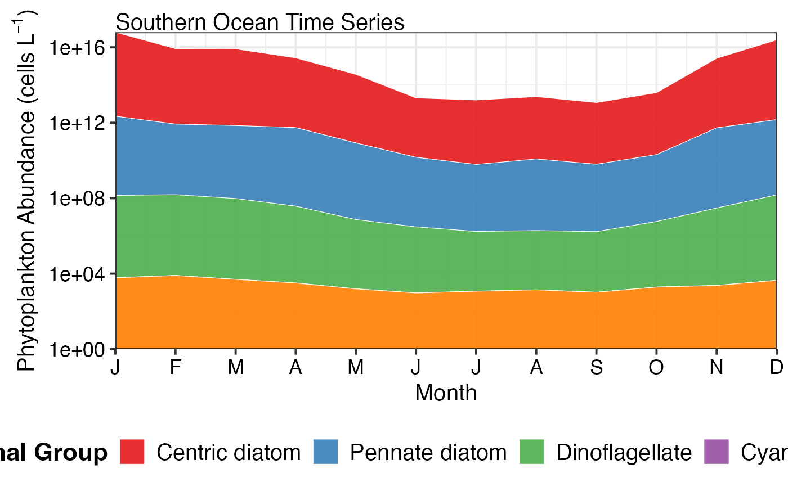

Create stacked area or bar plots showing the relative or absolute abundance of different functional groups over time. This visualisation is particularly useful for examining changes in community composition.
pr_plot_tsfg(df, Scale = "Actual", Trend = "Raw")Arguments
- df
A dataframe from
pr_get_FuncGroups()containing functional group data- Scale
Scaling of the y-axis:
"Actual"- Plot actual abundance values (stacked)"Proportion"- Plot as proportions summing to 1 (or 100%)
- Trend
The temporal scale for plotting:
"Raw"- Plot all data points over time (default)"Month"- Monthly climatology averaged across years"Year"- Annual means for each year
Value
A ggplot2 object showing functional group composition over time
Details
This function creates stacked area plots (for Raw trends) or stacked bar plots (for Month/Year trends) showing how functional group composition changes over time.
Functional Groups Plotted
Phytoplankton (5 groups):
Centric diatoms (radially symmetrical, bloom-forming)
Pennate diatoms (bilaterally symmetrical)
Dinoflagellates (flagellated protists)
Cyanobacteria (photosynthetic bacteria)
Other (remaining groups)
Zooplankton (7 groups):
Copepods (dominant marine zooplankton)
Appendicularians (larvaceans, gelatinous filter feeders)
Molluscs (pteropods - sea butterflies and angels)
Cladocerans (water fleas, e.g., Penilia, Evadne)
Chaetognaths (arrow worms, predatory)
Thaliaceans (salps, doliolids, pyrosomes)
Other (remaining groups)
Interpretation
Actual Scale: Shows true abundance patterns. Useful for seeing:
Total community biomass/abundance changes
Bloom events
Which groups dominate numerically
Proportion Scale: Shows relative composition. Useful for seeing:
Community shifts (e.g., diatoms to dinoflagellates)
Seasonal succession patterns
Long-term regime shifts
Changes that might be masked by overall abundance changes
Colours are assigned consistently across plots for each functional group.
See also
pr_get_FuncGroups() for preparing the input data,
pr_plot_PieFG() for pie chart visualisation of functional groups
Examples
# Plot actual abundances over time
df <- pr_get_FuncGroups("NRS", "Phytoplankton") %>%
dplyr::filter(StationCode %in% c('MAI', 'PHB'))
pr_plot_tsfg(df, Scale = "Actual", Trend = "Raw")
#> Warning: Removed 5 rows containing non-finite outside the scale range (`stat_align()`).
#> Warning: Removed 5 rows containing missing values or values outside the scale range
#> (`geom_area()`).

# Plot as proportions to see community shifts
pr_plot_tsfg(df, Scale = "Proportion", Trend = "Raw")
#> Warning: Removed 5 rows containing non-finite outside the scale range (`stat_align()`).
#> Warning: Removed 5 rows containing missing values or values outside the scale range
#> (`geom_area()`).
 # Monthly climatology showing seasonal patterns
pr_plot_tsfg(df, Scale = "Proportion", Trend = "Month")
#> Warning: Removed 20 rows containing missing values or values outside the scale range
#> (`geom_area()`).
# Monthly climatology showing seasonal patterns
pr_plot_tsfg(df, Scale = "Proportion", Trend = "Month")
#> Warning: Removed 20 rows containing missing values or values outside the scale range
#> (`geom_area()`).
 # Zooplankton functional groups
df_zoo <- pr_get_FuncGroups("CPR", "Zooplankton", near_dist_km = 250) %>%
dplyr::filter(BioRegion == "South-east")
pr_plot_tsfg(df_zoo, Scale = "Actual", Trend = "Raw")
#> Warning: Removed 77 rows containing non-finite outside the scale range (`stat_align()`).
# Zooplankton functional groups
df_zoo <- pr_get_FuncGroups("CPR", "Zooplankton", near_dist_km = 250) %>%
dplyr::filter(BioRegion == "South-east")
pr_plot_tsfg(df_zoo, Scale = "Actual", Trend = "Raw")
#> Warning: Removed 77 rows containing non-finite outside the scale range (`stat_align()`).